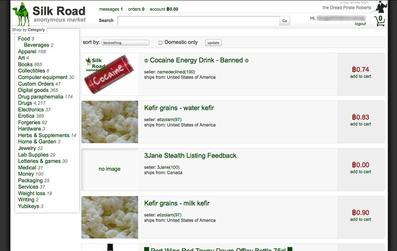

Silk Road (em português, 'Rota da Seda') foi um mercado operante através da Darknet que utilizava a rede Tor para assegurar o anonimato de compradores e vendedores no comércio de produtos ilícitos, particularmente drogas.
O site foi lançado em fevereiro de 2011.[1] Os compradores podiam registrar-se na Silk Road de graça, mas o vendedor devia adquirir novas contas por meio de leilões para supostamente mitigar a possibilidade de indivíduos mal-intencionados distribuírem mercadorias danificadas.
A partir de 2012, as vendas anuais eram estimadas em 22 milhões de dólares norte-americanos.
Em outubro de 2013, o FBI fechou o site[6] e prendeu Ross William Ulbricht, acusando-o de ser "Dread Pirate Roberts" ou DPR, o proprietário do site.[7] Em 6 de novembro de 2013, foi lançado o site Silk Road 2.0, por antigos administradores do Silk Road.[8] Este também foi fechado, e o seu suposto operador foi preso em 6 de novembro de 2014, no âmbito da chamada "Operação Onymous", uma operação policial internacional contra os mercados darknet e outros serviços ocultos operantes na rede tor.
Ulbricht foi condenado à uma dupla prisão perpétua mais 40 anos, sem possibilidade de liberdade condicional.
